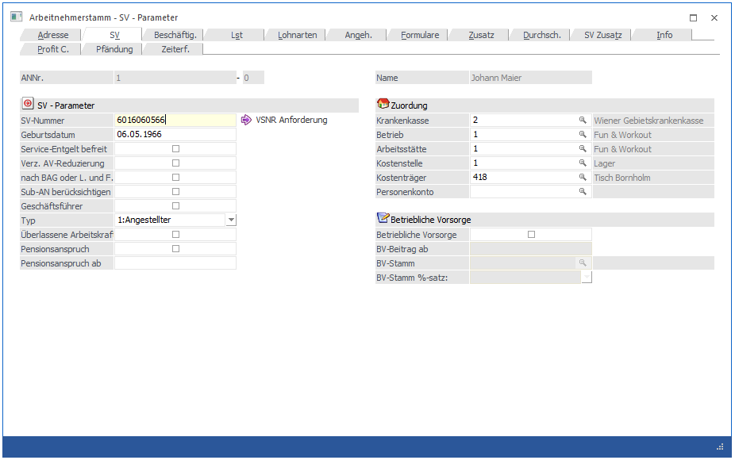

In diesem Fenster, das über den Menüpunkt
1 Stammdaten
1 Arbeitnehmer
1 Arbeitnehmerstamm
oder Schnellaufruf
1 STRG + A
1 Register Arbeitnehmerstamm - SV
aufgerufen wird, werden die SV-relevanten Daten erfasst und verwaltet.

Ø SV-Nummer:
Eingabe der SV-Nummer für diesen Arbeitnehmer. Diese Eingabe wird auf ihre Richtigkeit geprüft. Ist keine SV-Nummer bekannt, muss mittels "VSNR Anforderung" Button eine Versicherungsnummernanforderung an die Krankenkasse gesendet werden. Die Referenznummer der Versicherungsnummernanforderung wird im Hintergrund gemerkt und wird bis zur Bekanntgabe der tatsächlichen Versicherungsnummer für die mBGM Meldung herangezogen.
Ø Geburtsdatum:
Hier wird das (richtige) Geburtsdatum des AN eingetragen, wobei das Datum anhand der zuvor eingetragenen SV-Nummer vorgeschlagen wird. Aufgrund des Geburtsdatums wird geprüft, ob für den AN eine Beitragsentlastung für ältere Arbeitnehmer in Anspruch genommen werden kann.
Hinweis:
Ist in der SV-Nummer ein Geburtsdatum enthalten, das kein gültiges Datum ergibt (z.B. 011377) so muss im Geburtsdatum ein Gültiges eingegeben werden, sonst kann die Prüfung auf das Alter des AN nicht durchgeführt werden.
Ø SE Befr.
Ist diese Checkbox aktiviert, dann ist diese Person von der e-Card-Gebühr (Service-Entgelt) befreit. Ist die Checkbox deaktiviert, muss die e-Card-Gebühr bezahlt werden.
Ø Verz. auf AV-Reduzierung
Ab 1. Juli 2008 wird bei geringeren Bezügen der AV-Beitrag - gestaffelt nach der Bemessungsgrundlage - um 1 bis 3 % vermindert. Mittels aktiver Checkbox, wird diese nicht berechnet.
Ø nach BAG oder Land- und Forstwirtschaft
Die Option " nach BAG oder Land- und Forstwirtschaft" kann bei einem Lehrling aktiviert werden. Wenn diese Option aktiviert ist, dann wird den AN keine SV angelastet, d.h. der Dienstgeber übernimmt den gesamten SV-Anteil. Für AN, die mit dieser Option abgerechnet werden, wird am mBGM die AV-Reduzierung (falls vorhanden) mit einem eigenen Abschlagscode ausgewiesen.
Ø Sub-AN berücksichtigen (relevant bis 31.12.2018)
Wenn diese Checkbox aktiviert wird (die Checkbox ist allerdings nur dann aktiv, wenn es sich bei dem AN um einen SUB-AN mit der SUB-Nr. > 0 handelt, und wird bei der Anlage eines neuen SUB-AN automatisch gesetzt), dann werden bei der Abrechnung dieses AN die SV-Bezüge der vorher abgerechneten SUB-AN mit berücksichtigt. Damit können auch mehrere SUB-AN mit einer SV-Höchstbemessungsgrundlage abgerechnet werden.
Ø Geschäftsführer
Geschäftsführer sind (sofern sie überhaupt in der Lohnverrechnung verwaltet werden) im Normalfall nicht KU-pflichtig und müssen daher auf der Beitragsnachweisung extra ausgewiesen werden. Ist diese Checkbox aktiv, wird der AN als Geschäftsführer in der Beitragsnachweisung ausgewiesen. Wird diese Checkbox aktiviert, dann wird automatisch die Checkbox "Kammerumlage" deaktiviert (weil diese Abgabe im Normalfall von einem Geschäftsführer nicht abgeführt wird).
Ø Typ
Aus der Auswahllistbox kann gewählt werden, um welchen AN-Typ es sich handelt. Dabei stehen die Optionen
ü 0 - Arbeiter
ü 1 - Angestellter
ü 4 - Pensionist (ASVG)
ü 5 - Pensionist (sonstige)
zur Verfügung. Wird der Typ "4 - Pensionist (ASVG)" bzw. "5 - Pensionist (sonstige)" ist verwendet, dann hat das auch Auswirkung auf die Berechnung der Lohnsteuer.
Ø Überlassene Arbeitskraft
Dieses Feld steht nur dann zur Verfügung, wenn in den Betriebsdaten im Register Krankenkasse die Option "Arbeitskräfteüberlasser" aktiviert ist. Damit wird gesteuert, dass zusätzlich zur SV auch der AÜG Beitrag berechnet und am mBGM entsprechend ausgewiesen wird.
Ø Pensionsanspruch
Besteht auf Grund langer Versicherungszeiten ein Pensionsanspruch und liegt ein entsprechender Bescheid vor, so muss diese Checkbox aktiviert werden, um die entsprechende Reduktion der Beiträge berücksichtigen zu können. Wird die Checkbox aktiviert, so steht auch das nachfolgende Feld "Pensionsanspruch ab" zur Verfügung.
Ø Pensionsanspruch ab
Hier muss ein Datum hinterlegt werden, sobald die Checkbox "Pensionsanspruch" aktiviert wurde, damit die entsprechenden Abschläge bei der Abrechnung und am mBGM berücksichtigt werden können.
Zuordnung
Ø Krankenkasse
In diesem Feld wird die Krankenkasse eingetragen, bei der die SV-Abgaben für diesen AN gemacht werden müssen. Das hängt im Wesentlichen davon ab, an welcher Betriebsstätte (sofern es mehrere gibt) der AN beschäftigt ist. Nach der Eingabe der Krankenkassennummer wird daneben die zuständige Krankenkasse aus den Betriebsdaten angezeigt (sofern in den Betriebsdaten ein entsprechender Empfänger angelegt wurde).
Durch Drücken der F9-Taste kann nach allen bereits angelegten Betriebsstätten gesucht werden. Wird ein Betrieb ausgewählt, bei dem das Inaktiv-Kennzeichen gesetzt ist, wird eine entsprechende Meldung ausgegeben.
Ø Betrieb
Eingabe einer Betriebsnummer (siehe Kapitel Betriebsdaten), zu der der Arbeitnehmer zugeordnet wird. Arbeitnehmer können getrennt nach Betriebsnummern für den Druck von Überweisungsträgern abgerufen werden. Nach Eingabe der Betriebsnummer wird daneben der dazugehörige Betriebsnamen aus den Betriebsdaten angezeigt (sofern in den Betriebsdaten ein entsprechender Empfänger angelegt wurde). Wird ein Betrieb ausgewählt, bei dem das Inaktiv-Kennzeichen gesetzt ist, wird eine entsprechende Meldung ausgegeben.
Ø Arbeitsstätte
Eingabe einer Arbeitsstätte (siehe Kapitel Betriebsdaten), in der der Arbeitnehmer tätig ist. Diese Information wird in weiterer Folge für die Übermittlung der L16 benötigt. Bei der Erstanlage eines AN wird die Arbeitsstätte vom Feld "Betrieb" übernommen. Wird eine Arbeitsstätte ausgewählt, bei dem das Inaktiv-Kennzeichen gesetzt ist, wird eine entsprechende Meldung ausgegeben.
Ø Kostenstelle
Eingabe der Nummer der Stamm-Kostenstelle, die dem Arbeitnehmer zugeordnet ist. Kostenstellendaten werden im Programm WinLine KORE festgelegt. Durch Drücken der F9-Taste kann nach allen angelegten Kostenstellen gesucht werden.
Ø Kostenträger
Eingabe der Nummer des Stamm-Kostenträgers, der dem Arbeitnehmer zugeordnet ist. Kostenstellendaten werden im Programm WinLine KORE festgelegt.
Ø Personenkonto
Eingabe der Nummer des Stamm-Personenkontos, das dem Arbeitnehmer zugeordnet ist. Personenkonten werden im Programm WinLine FIBU oder WinLine FAKT festgelegt.
Betriebliche Vorsorge
Ø Betriebliche Vorsorge
Ist diese Checkbox aktiviert, dann wird der AN nach den Richtlinien der "Abfertigung NEU" abgerechnet. Bei einer Neuanlage eines Arbeitnehmers, wird die Checkbox standardmäßig aktiviert. Nur wenn die Checkbox aktiv ist, kann im Register Beschäftigung ein BV-Datum vergeben werden. Außerdem stehen 3 weitere Eingabefelder zur Verfügung:
Ø BV-Beitrag ab:
Hier kann das Datum eingegeben werden, ab dem der AN BV-pflichtig ist (das Datum darf nicht vor dem 1.1.2003 liegen, sonst kommt auch eine entsprechende Meldung). Standardmäßig wird hier - bei einer AN- Neuanlage - das Eintrittsdatum + 1 Monat. Für die Abrechnung ist dieses Datum allerdings nicht relevant. Für die Abrechnung wird ausschließlich das in der Beschäftigung hinterlegte BV Datum herangezoge.
Ø BV-Stamm:
Hier muss der BV-Stamm ausgewählt werden, an den die BV-Beiträge abgeführt werden sollen. Grundsätzlich kann es pro DG immer nur eine BV-Kasse geben. Durch Anklicken der F9-Taste kann nach allen BV-Kassen gesucht werden. Nach Eingabe der BV-Kasse wird darunter der Namen der BV-Kasse angezeigt.
Ø BV-Stamm %-satz:
Aus der Auswahllistbox kann der entsprechende Prozentsatz ausgewählt werden, wobei hier nur die Prozentsätze angezeigt werden, die auch im BV-Stamm angelegt wurden. Es wird nur die Nummer (0, 1 oder 2) gespeichert, sodass eine Änderung des BV-Prozentsatzes auch eine Änderung für den AN bewirkt.